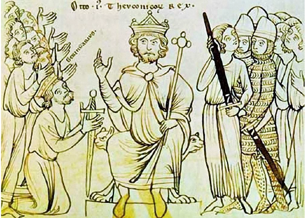
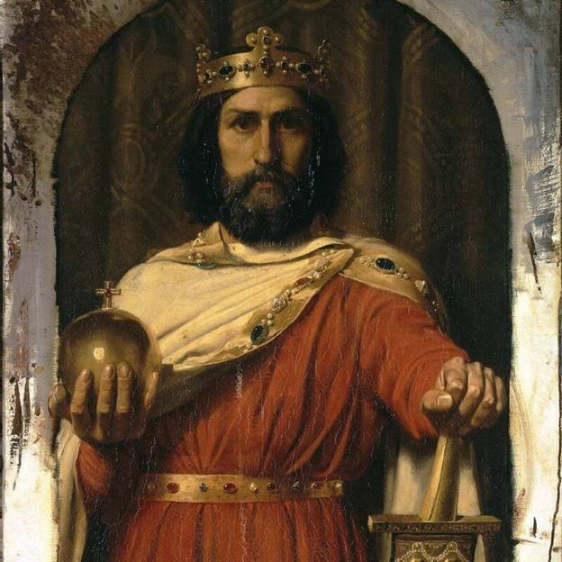
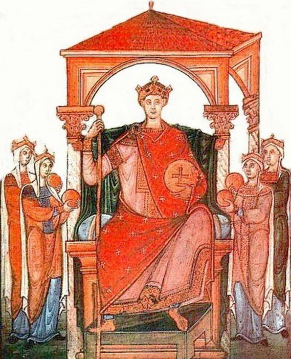

1. Оттон I. Удачно подавил несколько мятежей в стране, предпринял удачный военный поход в Италию, и нанес сокрушительное поражение венграм при Лехе (955), после чего их набеги на Германию прекратились.

2. Гуго Капет. Удачно защищал границы Франции, а также произвел кучу важных реформ, повлиявших на историю Франции. Основал династию Капетингов, издав закон о коронации королем своего сына.

3. Оттон II. Несколько раз совершил удачные попытки подавления восстания, но был убит арабами во время неудачного похода в южную Италию.

Так что почти со 100 процентной вероятностью можно утверждать, что в этом году награду получит ОттонI
Замки во Франции недорого… Узнатьцену…